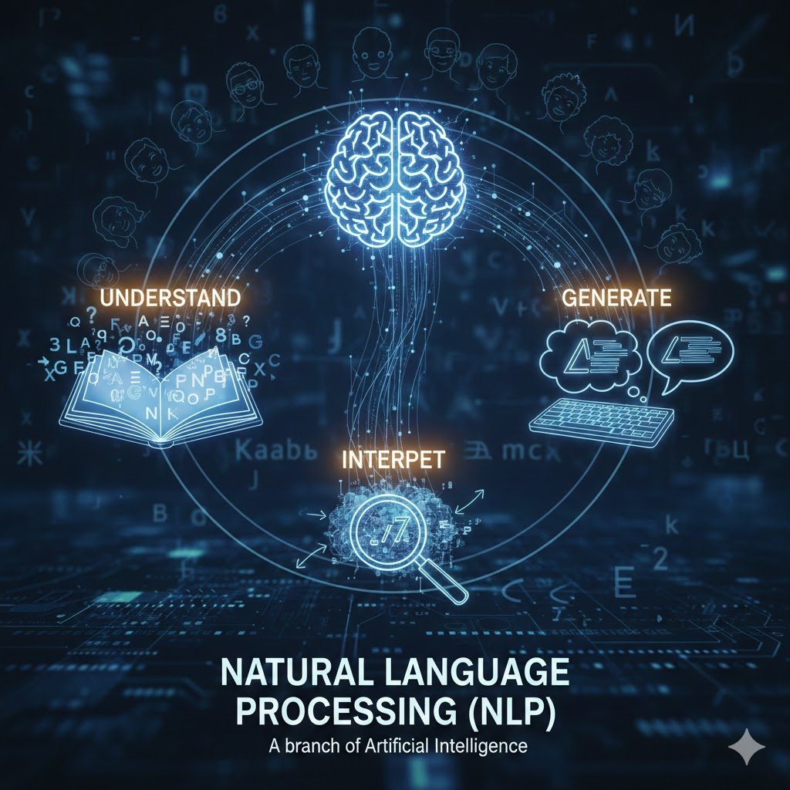
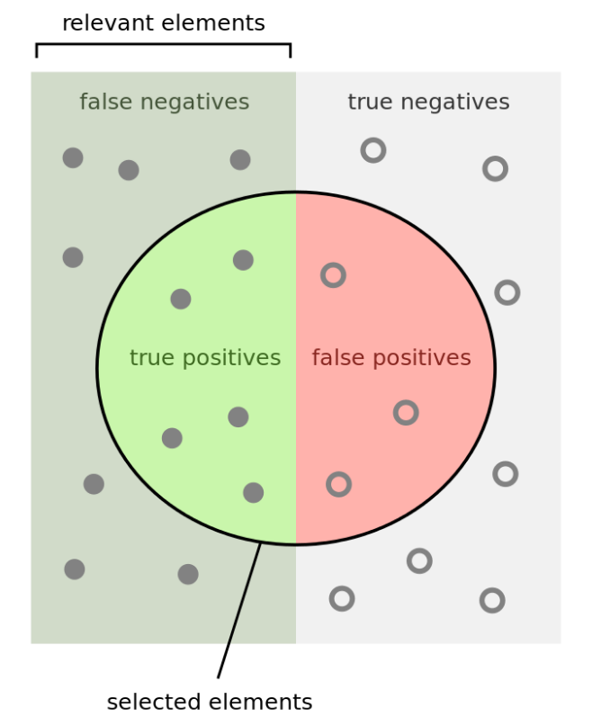
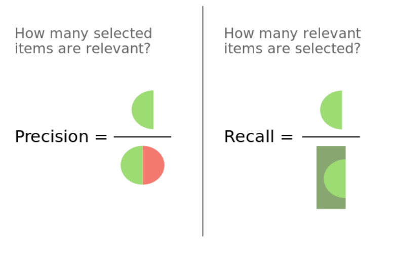

Keyboard shortcuts:
N/SpaceNext Slide
PPrevious Slide
OSlides Overview
ctrl+left clickZoom Element
If you want print version => add '
?print-pdf' at the end of slides URL (remove '#' fragment) and then print.
Like: https://ProgressBG-ChatGPT_and_ML-course.github.io/...CourseIntro.html?print-pdf
Natural Language Processing (NLP) Basics
Created for
Iva E. Popova, 2016-2025,

What is NLP?

- Natural Language Processing (NLP) is a branch of Artificial Intelligence that helps computers understand, interpret, and generate human language.
- Think of it as teaching computers to "read" and "write" the way humans do.
Real-world applications of NLP
- Virtual assistants: Siri, Alexa, Google Assistant
- Email spam filters: detecting unwanted emails
- Autocomplete and autocorrect: your phone predicting what you'll type next
- Machine translation: Google Translate converting between languages
- Sentiment analysis: companies analyzing customer reviews
- Chatbots: customer service bots on websites
Why is NLP Challenging?
Ambiguity
- Words or sentences can have multiple meanings.
- Lexical ambiguity:
"Bank" → financial institution or riverbank. - Syntactic ambiguity:
"I saw the man with the telescope."
→ Who has the telescope?
Context Dependence
- Meaning often depends on context.
- "It’s cold in here." might mean a complaint, a request to close the window, or just an observation.
- "Apple" could refer to the fruit or the company depending on the conversation.
Idioms and Figurative Language
- Expressions rarely mean what the words literally say.
- "Kick the bucket" = die
- "Break the ice" = make people comfortable
- "Spill the tea" = share gossip
Sarcasm and Tone
- Machines struggle because the literal meaning is often the opposite.
- "Great job…" (said after a mistake)
- "Yeah, that’s exactly what I wanted." (frustrated tone)
Unstructured and Noisy Input
- Real-world text is messy.
- "definately"
- "That movie was fire."
- "idk lol u ok?"
Variability in Expression
- There are many ways to express the same idea.
- "I’m hungry."
- "I could eat."
- "My stomach is yelling at me."
The NLP Pipeline
The NLP Pipeline
- When we process text, we typically follow these steps:
- Raw Text → Preprocessing → Tokenization → Vectorization → Model → Evaluation → Deployment
Text Preprocessing: Cleaning and Normalizing Text
Lowercasing
- Convert all text to lowercase to standardize the data.
- Example:
- Converting all text to lowercase ensures "Hello", "hello", and "HELLO" are treated the same.
text = "Hello World! How are YOU?"
cleaned = text.lower()
print(cleaned) # "hello world! how are you?"
Removing Punctuation
- Punctuation often doesn't add meaning for basic tasks.
- Example:
- Removing punctuation ensures "Hello, world!" and "Hello world" are treated the same.
text = "Hello, world! How are you?"
# Remove all punctuation
punctuations = ["!", "?", ",", "."]
cleaned = "".join([char for char in text if char not in punctuations])
print(cleaned) # "Hello world How are you"
Removing Numbers
- Sometimes numbers aren't relevant to our analysis.
- Example:
- Removing numbers ensures "I bought 3 apples for $5.99" and "I bought apples for $" are treated the same.
import re
text = "I bought 3 apples for $5.99"
cleaned = re.sub(r'\d+', '', text)
print(cleaned) # "I bought apples for $."
Removing Stopwords
- Stopwords are common words that carry little meaning: "the", "is", "at", "which", "a", etc.
- For next example, we will use spaCy - a powerful library for natural language processing (NLP) in Python. You can install it using
pip install spacy. - The model for English language must be installed first (run once):
python -m spacy download en_core_web_sm
import spacy
# Load the spaCy English model.
nlp = spacy.load("en_core_web_sm")
text = "This is a sample sentence showing off stopword removal."
# Process the text to create a Doc object.
doc = nlp(text)
# Filter the tokens based on their spaCy properties.
# - token.text: The actual word string
# - token.is_stop: True if the token is a stop word (e.g., 'is', 'a', 'off')
# - token.is_punct: True if the token is a punctuation mark (e.g., '.')
# - token.is_space: True if the token is only whitespace
filtered_tokens = [
token.text
for token in doc
if not token.is_stop and not token.is_punct and not token.is_space
]
# Output the result
print(f"Original Text: {text}")
print(f"Filtered Tokens: {filtered_tokens}")
Stemming and Lemmatization
- Both stemming and lemmatization are techniques used in NLP to reduce words to their base or root form
- Stemming is a crude heuristic process that lops off the ends of words, usually generating a "stem" that is often not a real word
- running → run, better → better
- Lemmatization is a more advanced process that uses the language's rules to reduce words to their base or root form
- running → run, better → good
- Example:
import spacy
# Load the small English model
nlp = spacy.load("en_core_web_sm")
text = (
"The scientists are running several new experiments. "
"He runs very easily and fairly well. "
"She quickly ran from the room."
)
# Process the text to create a Doc object with tokens, POS tags, etc.
doc = nlp(text)
print("Original Text:\n", text)
print("-" * 50)
# Extract and print the token, its Part-of-Speech (POS), and its Lemma
print("{:<12} {:<6} {:<12}".format("Token", "POS", "Lemma"))
print("{:<12} {:<6} {:<12}".format("-----", "---", "-----"))
results = []
for token in doc:
# We skip spaces and punctuation for a cleaner output of only words
if token.is_punct or token.is_space:
continue
# token.text: The original word
# token.pos_: The Part-of-Speech tag (e.g., VERB, ADV, NOUN)
# token.lemma_: The base form of the word
results.append({"token": token.text, "pos": token.pos_, "lemma": token.lemma_})
# Print formatted output
print("{:<12} {:<6} {:<12}".format(token.text, token.pos_, token.lemma_))
Tokenization
What is Tokenization?
- Tokenization is the fundamental first step in processing text for any Natural Language Processing (NLP) or Large Language Model (LLM) task.
- It is the process of breaking down a stream of text into smaller, meaningful units called "tokens".
- A token can be a single word, a part of a word (a subword), characters, numbers, or any significant element in the text, depending on the type of tokenizer used
- For example, if the input is: "Don't stop!", the resulting tokens might be ["Don", "'t", "stop", "!"]
- Reference: OpenAI Tokenizer
- There is no single "right" way to tokenize text. While the goal is the same—to segment text—the methodology varies widely
Word Tokenization (Traditional NLP)
- This is the simplest form. It breaks text into tokens based on delimiters, typically spaces and punctuation.
- Process: Splits on whitespace, then handles punctuation.
- Example: "I am running." → ['I', 'am', 'running', '.']
- Drawback: Struggles with contractions (don't), hyphenated words (state-of-the-art), and different languages.
Word Tokenization - Example with spaCy
- This treats each “word” (and punctuation) as a token. This is often simpler and more intuitive. As explained in spaCy docs, tokenization is rule-based (splitting on whitespace and punctuation, handling contractions, etc.) and is “non-destructive” (you can reconstruct the original text).
- Reference: spaCy Tokenization
import spacy
nlp = spacy.load("en_core_web_sm")
text = "NLP is amazing! Let's learn it."
doc = nlp(text)
tokens = [token.text for token in doc]
print(tokens)
# Output: ['NLP', 'is', 'amazing', '!', 'Let', "'s", 'learn', 'it', '.']
Subword Tokenization (Modern LLMs)
- This is the dominant method used by models like GPT, BERT, and T5. It finds a balance between word and character tokenization by breaking rare words into smaller, frequently occurring units (subwords).
- Process: Uses statistical methods (like Byte-Pair Encoding (BPE) or WordPiece) to build a vocabulary of common subword units.
- Advantages:
- Manages Vocabulary: Handles large datasets efficiently without a massive vocabulary size.
- Handles Unknown Words: Can represent a new, unseen word (like a misspelled name) by breaking it down into known subwords.
- Handles Morphology: Implicitly handles stemming/lemmatization by splitting inflected words (e.g., "running" → "run" + "##ning").
Subword Tokenization - Example with BertTokenizer
- In next example we will use a pretrained subword tokenizer: BertTokenizer from Hugging Face Transformers library — which uses the WordPiece algorithm.
- Install the transformers Library: Hugging Face Transformers Installation and the PyTorch framework that it depends on.
# Install transformers library
pip install transformers
# Install torch library
pip install torch
from transformers import BertTokenizer
tokenizer = BertTokenizer.from_pretrained("bert-base-uncased")
text = "Tokenization is essential for NLP."
subword_tokens = tokenizer.tokenize(text)
print("Subword tokens:", subword_tokens)
# OUTPUT:
# Subword tokens: ['token', '##ization', 'is', 'essential', 'for', 'nl', '##p', '.']
Why Tokenization Matters?
- The choice of tokenization strategy directly impacts how a model learns and generalizes. Different tokenization affects the final output because it changes the size of the vocabulary, how out-of-vocabulary (OOV) words are handled, and how input text is segmented.
- Here are examples illustrating how Subword (BPE/WordPiece) and Word Tokenization affect model performance in handling Out-Of-Vocabulary (OOV) Words, like processing a new, unseen technical term or a typo:
| Tokenization Strategy | Input Text | Tokens Generated | Impact on Model Performance |
|---|---|---|---|
| Word Tokenization | The cryptotoken failed. | ['The', 'cryptotoken', 'failed', '.'] |
The word "cryptotoken" is not in the model's vocabulary. It is replaced with an
<UNK> (Unknown) token. The model completely loses the semantic meaning of that word.
|
| Subword Tokenization (BPE) | The cryptotoken failed. | ['The', 'crypto', '##token', 'failed', '.'] | The tokenizer breaks the word into known subword pieces: crypto (known) and ##token (known). The model retains most of the word's semantic meaning and can infer its purpose. |
Text Vectorization
Overview
- Computers don't understand text - they work with numbers.
- Vectorization converts text into numerical representations (vectors or arrays of numbers)
Bag of Words (BoW) approach
- This is the simplest form of vectorization. It converts text into a fixed-size vector based on word frequency.
- Concepts:
- Example:
- Converting "I love cats" and "I adore cats" to [0 0 1 1] and [1 1 0 0] respectively.
Document 1: "I love dogs"
Document 2: "I adore cats"
Vocabulary: ['adore' 'cats' 'dogs' 'love']
Vector 1: [0 0 1 1]
Vector 2: [1 1 0 0]
from sklearn.feature_extraction.text import CountVectorizer
# the corpus is a list of documents
corpus = ["I love dogs", "I adore cats"]
# the vectorizer is a tool that converts text into a matrix of token counts
vectorizer = CountVectorizer()
X = vectorizer.fit_transform(corpus)
# the feature names are the vocabulary of the corpus
print(vectorizer.get_feature_names_out())
# Convert the sparse matrix X to a dense NumPy array
print(X.toarray())
Limitations of BoW:
- Ignores word order: "dog bites man" = "man bites dog"
- Ignores word frequency across documents
- Creates huge, sparse matrices
Concepts clarification: sparse vs dense matrix
- Sparse matrix:
- Definition: A matrix where most of the elements are zero.
- Storage: It only stores the location (row, column) and value of the non-zero elements. It ignores the zeros entirely.
- Why use it? For a vocabulary of 50,000 words and 10,000 documents, most documents only use a tiny fraction of the vocabulary. Storing all those zeros would waste enormous amounts of memory and processing power.
- Dense matrix:
- Definition: A matrix where every element is stored explicitly, even if the value is zero.
- Storage: Stores every element in contiguous memory blocks.
- Why use it? Required for compatibility with many general-purpose functions, easy visualization (like converting to a pandas DataFrame), and traditional mathematical operations.
TF-IDF (Term Frequency - Inverse Document Frequency)
- TF-IDF improves on BoW by considering how important a word is to a document relative to all documents.
- TF (Term Frequency): How often word appears in document
- IDF (Inverse Document Frequency): How rare the word is across all documents
- Formula: TF-IDF = TF × IDF
- Words that appear often in one document but rarely in others get high scores.
- Words that appear often in all documents get low scores.
TF-IDF Example
from sklearn.feature_extraction.text import TfidfVectorizer
import pandas as pd
# Define the corpus
documents = [
"I love machine learning",
"I love coding",
"Machine learning is amazing",
"Deep learning is a subset of machine learning",
]
# Create TF-IDF vectorizer
tfidf_vectorizer = TfidfVectorizer()
# Fit the vectorizer to the documents and transform the documents into the TF-IDF matrix
# The result is a sparse matrix (efficient for large datasets)
tfidf_matrix = tfidf_vectorizer.fit_transform(documents)
# Get the feature names (vocabulary)
vocabulary = tfidf_vectorizer.get_feature_names_out()
### Convert the sparse TF-IDF matrix to a DataFrame
# Convert to a dense NumPy array and round the scores for readability
tfidf_array = tfidf_matrix.toarray().round(4)
# Define descriptive indices for the documents (rows)
document_indices = [f"Doc {i + 1}" for i in range(len(documents))]
# Create a DataFrame
df_tfidf = pd.DataFrame(tfidf_array, columns=vocabulary, index=document_indices)
print("## TF-IDF Matrix as DataFrame")
print("-----------------------------")
print(df_tfidf)
# Optional: Print the original documents for easy reference
print("\n## Original Documents")
print("---------------------------------")
for i, doc in enumerate(documents):
print(f"Doc {i + 1}: {doc}")
Limitations of TF-IDF
- TF-IDF ignores word order
- TF-IDF doesn't capture semantic meaning
- TF-IDF can be sensitive to stop words
When to use TF-IDF
- Text classification
- Information retrieval
- Document similarity
- When rare words are more important than common ones
Word Embeddings
- Represent words as dense vectors in continuous space where similar words are close together.
- Key idea: Words with similar meanings have similar vectors.
{kind=link}
Reference: www.cs.cmu.edu/~dst/WordEmbeddingDemo/tutorial.html
Popular Word Embedding Models
- Word2Vec: Google's model (2013)
- GloVe: Stanford's model
- FastText: Facebook's model (handles unknown words better)
- Modern contextual embeddings: BERT, GPT
Word Embeddings - Example
- Next example uses gensim library
from gensim.models import Word2Vec
## Training Data - list of tokenized sentences
sentences = [
["machine", "learning", "is", "fun"],
["deep", "learning", "is", "powerful"],
["machine", "learning", "uses", "algorithms"],
["deep", "learning", "uses", "neural", "networks"],
]
## Train Word2Vec model
model = Word2Vec(sentences, vector_size=50, window=3, min_count=1, workers=4)
# The hyperparameter settings are:
# vector_size=50: Sets the dimensionality of the resulting word vectors. Every word will be represented by a 50-element vector (instead of the standard 300 for large models).
# window=3: Sets the context window size. When training, the model considers words up to 3 positions away from the target word to be its context.
# min_count=1: Ignores all words with a total frequency lower than this. Since it's set to 1, all words in our small dataset are included in the final vocabulary.
# workers=4: Uses 4 parallel threads (CPU cores) to speed up the training process.
## Get vocabulary
# model.wv is a dictionary-like object which holds the trained embeddings (word vectors)
vocabulary = model.wv.index_to_key
print(f"Vocabulary: {vocabulary}")
# Get vector for a word
vector = model.wv["learning"]
print(f"Vector for 'learning': {vector[:5]}...") # Show first 5 dimensions
# Find similar words
similar_words = model.wv.most_similar("learning", topn=3)
print(f"\nWords similar to 'learning': {similar_words}")
Basic NLP Tasks
Text Classification
Overview
- Text classification is the task of assigning a label or class to a piece of text.
- It is a fundamental task in NLP and has a wide range of applications.
- Examples:
- Spam detection (spam/not spam)
- Sentiment analysis (positive/negative/neutral)
- Topic classification (sports/politics/tech)
Named Entity Recognition (NER)
Overview
- Named Entity Recognition (NER) is the task of identifying and classifying named entities in text.
- Example: Let's have the sentence "Apple Inc. is planning to open a new store in New York next month.". We can extract the following entities:
- Apple Inc. is an organization (ORG)
- New York is a geopolitical entity (GPE)
- next month is a date (DATE)
Example
import spacy
# Load English model
nlp = spacy.load("en_core_web_sm")
text = "Apple Inc. is planning to open a new store in New York next month."
doc = nlp(text)
print("Named Entities:")
for ent in doc.ents:
print(f"{ent.text}: {ent.label_}")
# Apple Inc.: ORG (Organization)
# New York: GPE (Geopolitical Entity)
# next month: DATE
Part-of-Speech (POS) Tagging
- Part-of-Speech (POS) Tagging is the task of identifying and classifying the grammatical roles of words in text.
import spacy
# Load English model
nlp = spacy.load("en_core_web_sm")
text = "The quick brown fox jumps over the lazy dog"
doc = nlp(text)
for token in doc:
print(f"{token.text}: {token.pos_}")
Text Similarity
- Text Similarity is the task of measuring the similarity between two pieces of text.
from sklearn.metrics.pairwise import cosine_similarity
from sklearn.feature_extraction.text import TfidfVectorizer
texts = [
"I love machine learning",
"I enjoy machine learning",
"The weather is nice today"
]
vectorizer = TfidfVectorizer()
vectors = vectorizer.fit_transform(texts)
similarity = cosine_similarity(vectors[0:1], vectors[1:2])
print(f"Similarity between text 1 and 2: {similarity[0][0]:.3f}")
similarity = cosine_similarity(vectors[0:1], vectors[2:3])
print(f"Similarity between text 1 and 3: {similarity[0][0]:.3f}")
Classification Metrics
Classification Metrics
Accuracy
- Accuracy is the ratio of correctly predicted instances to the total instances.
- Accuracy gives us the percentage of correct predictions
Confusion Matrix
- A confusion matrix is a table used to evaluate the performance of a classification model.
- It helps you understand whether it confuses positive and negatives, helping you improve its accuracy.
- True Positive (TP): The model correctly predicts the positive class.
- True Negative (TN): The model correctly predicts the negative class.
- False Positive (FP): The model incorrectly predicts the positive class (Type I error).
- False Negative (FN): The model incorrectly predicts the negative class (Type II error).

Precision and recall
- Precision is the ratio of correctly predicted positive observations to the total predicted positives.
- Precision = TP / (TP + FP)
- Recall (Sensitivity) is the ratio of correctly predicted positive observations to all actual positives.
- Recall = TP / (TP + FN)


Practical example: Simple Sentiment Analysis model
Practical example: Simple Sentiment Analysis model
- The project is given in next PracticalExample-SimpleSentimentAnalysisModel.ipynb file.
- You can view it at PracticalExample-SimpleSentimentAnalysisModel @nbviewer.
These slides are based on
customised version of
framework